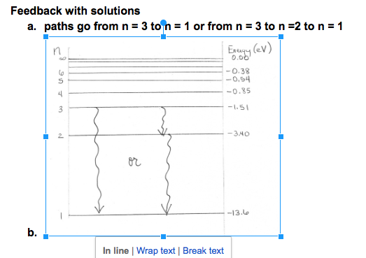

Current steps to setup a problem.
Example: Atomic Transitions

1. Create, crop, and upload image. (20 min)
2. Upload vectordraw.js and vectordraw.css (already done - but let’s say 3 min for a novice).
3. Copy and edit template from api-example.html (total ~25 min )
- Change file paths from “edX/JS101” to “DavidsonNext/Ann101"
- Create new list of vectors
- Create list of expected vector properties
- Issue: Determine utility of “points”. In this example, not needed, but I cannot comment it out without breaking the interactive.
- Issue: Turn off highlighting of labels. Some cases will need to draw vector where label overlaps.
4. Fiddle with “tail locations” for grading purposes. (5 min).
- Questions: For all other prototypes, this is important. Need vectors to come from a particular point. However, the energy level problem does not require that. The answer to this question largely depends on the number of vectors they draw (3). For other prototypes, I had to slowly move points around the image.
- For Energy Levels, just hid the point outside the view box and ignored for now.
5. Working with the grader (~ 15 min - stopped because need for different kind of grading)
- Adjust expected properties.
- Set tail tolerance to 50.0 so that it wouldn’t impact grading. But can’t currently grade tail tolerance in x and y direction.
- What are the grading criteria here?
-
- 3 possible transitions
-
- Teacher will want to allow more than three vectors as a distractor.
- How do we grade unlabeled vectors?
- Each vector has a starting level, and an ending level.
-
- Grade angle (270), length (distance between levels), starting “y” location (no need for x).
6. Need documentation for “custom checks in grader”.